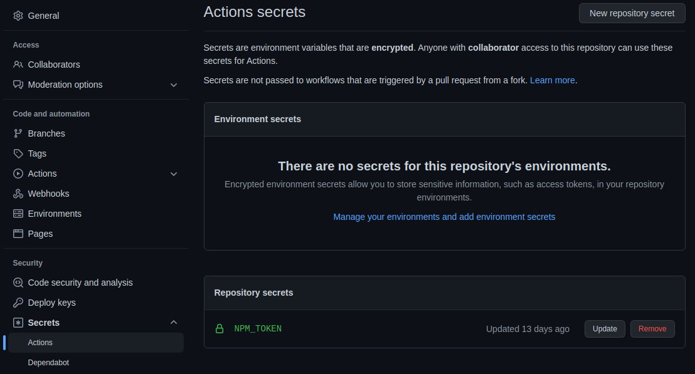

Variables y secretos
Al igual que en los lenguajes de programación, el uso de variables para almacenar datos es muy útil en GitHub Actions. Gracias a ellas, podemos definir datos de configuración que podemos utilizar en el flujo de trabajo. Como algunos datos pueden contener datos reservados o privados como, por ejemplo, contraseñas, tokens, claves de API, etc., utilizaremos variables especiales conocidas como secretos.
Al finalizar, sabrá:
-
Qué es y cómo se definen variables específicas de un flujo de trabajo, un trabajo o un paso.
-
Cuáles son las variables predefinidas que vienen con GitHub Actions.
-
Qué es y cómo se definen los secretos.
-
Para qué sirve el secreto GITHUB_TOKEN.
Introducción
Son muchas las ocasiones en las que tenemos que almacenar datos para su posterior uso en el flujo de trabajo, ya sea en el propio flujo, en uno de sus trabajos o incluso en un paso de un trabajo. Por suerte, esto es posible y podemos hacerlo mediante el uso de variables y secretos. Es muy importante distinguir el ámbito y el tipo de dato para su ubicación en la sección correspondiente.
Variables
Una variable es un elemento para almacenar un dato como en cualquier lenguaje de programación. El ámbito (scope) de una variable delimita dónde se puede utilizar. Distinguimos tres ámbitos: a nivel de flujo de trabajo, de trabajo o de paso. En los tres casos, se definen mediante una propiedad de tipo objeto env, donde cada una de sus propiedades representa una variable. El nombre de la propiedad es el nombre de la variable; y su valor, como es de esperar, el valor de la variable. Así pues, si definimos una variable en la propiedad env del flujo de trabajo, su ámbito será todo el flujo; en cambio, si lo hacemos en un trabajo, sólo ese trabajo.
Ejemplo:
env:
version: ${{ inputs.version }}
os: ${{ inputs.os }}
Acceso a variables
Si necesitamos acceder al valor de una variable en un valor textual de una propiedad, podemos hacerlo mediante el siguiente formato $nombreVariable. Ejemplo:
run: npm i $global $paquete
Contexto env
Si necesitamos acceder al valor de una variable en una expresión, usaremos el contexto env (env context), que consiste en un objeto con una propiedad para cada variable disponible en el punto en el que nos encontramos. Si estamos ante un paso, contendrá las específicas del paso, pero también las de su trabajo y las del flujo de trabajo. De ahí, lo de en el punto en el que nos encontramos.
Actualización de variables
Podemos actualizar el valor de una variable mediante un trabajo, usando un paso de shell similar a:
- run: echo "variable=valor" >> $GITHUB_ENV
He aquí un ejemplo ilustrativo que actualiza el valor de una variable version cuyo valor contiene un texto como “1.2.3”, incluidas las comillas dobles, una vez convertida a v1.2.3:
- run: echo "version=v${version:1:-1}" >> $GITHUB_ENV
No olvide hacer el cambio como se muestra. $GITHUB_ENV es una variable del flujo de trabajo que referencia a un archivo especial usado, internamente por GitHub, para fijar valores de variables de entorno.
Variables predefinidas
Una variable predefinida (default variable) es aquella que viene de fábrica con GitHub Actions. He aquí algunas de ellas:
| Variable | Descripción |
|---|---|
| CI | Siempre vale true. |
| GITHUB_ACTIONS | Indica si está siendo ejecutado por GitHub Actions. Siempre a true. |
| GITHUB_ACTOR | Nombre de la cuenta del usuario que provocó la ejecución del flujo de trabajo. |
| GITHUB_EVENT_NAME | Nombre del evento que disparó la ejecución del flujo de trabajo. |
| GITHUB_REPOSITORY | Nombre del repositorio en formato propietario/repositorio. |
| GITHUB_REPOSITORY_OWNER | Nombre del propietario del repositorio. |
| GITHUB_RETENTION_DAYS | Número de días que se retienen los logs y los artefactos. |
| RUNNER_OS | Nombre del sistema operativo: Linux, Windows o macOS. |
Secretos
Un secreto (secret) es un dato cuyo valor debe mantenerse a buen recaudo como, por ejemplo, un token, una contraseña, una clave, etc. Así, por ejemplo, si necesitamos un token para publicar en un registro como, por ejemplo, el de NPM, primero, tendremos que obtenerlo de https://www.npmjs.com y, a continuación, guardarlo como secreto para que nadie tenga acceso a él, salvo el flujo de trabajo.
Los secretos no son más que variables cifradas cuyo contenido se accede descifrado, pero se mantiene cifrado siempre que sea necesario para mantener así su privacidad. GitHub Actions garantiza que nunca se expongan en los logs y se encarga de mantenerlos cifrados y de descifrarlos cuando los usamos.
Atendiendo a dónde se almacenan, se distingue entre secretos de repositorio y de organización. Un secreto de repositorio (repository-level secret) es aquel que se almacena a nivel de repositorio y sólo se puede utilizar con flujos de trabajo definidos en ese mismo repositorio. Mientras que un secreto de organización (organization-level secret) se define a nivel de cuenta y se puede utilizar en varios repositorios de esa cuenta.
Creación de secretos de repositorio
Los secretos de repositorio se crean en GitHub, mediante la pestaña Settings del propio repositorio. Bajo General > Security > Secrets > Actions, encontramos los secretos ya dados de alta y mediante el botón New repository secret podemos crear uno nuevo:

Contexto secrets
Para acceder a un secreto, se usa el contexto secrets (secrets context), el cual no es más que un objeto con una propiedad para cada secreto disponible. Por ejemplo, si hemos definido el secreto NPM_TOKEN para que almacene el token que debemos utilizar para interactuar con el registro de NPM, podremos solicitar su valor mediante una expresión como la siguiente:
${{ secrets.NPM_TOKEN }}
Secreto predefinido GITHUB_TOKEN
Cuando se necesita acceder al repositorio Git actual, se necesita un token. Este token lo genera automáticamente GitHub Actions y lo pone a nuestra disposición mediante el secreto GITHUB_TOKEN. Más concretamente, este token es específico y se autogenera para cada trabajo, es decir, se crea para ejecutar un determinado trabajo. Pero como se genera automáticamente para cada uno de ellos, en principio, esto no debería ser un problema para nosotros. Como es un secreto, accederemos a él como a cualquier otro, mediante el contexto secrets:
${{ secrets.GITHUB_TOKEN }}
Es importante que no olvide que este token es específico del repositorio Git actual. No permitirá el acceso a otros repositorios, ni aun si son públicos.
Gracias a este token, podemos acceder y hacer cambios en un repositorio mediante sus flujos de trabajo.
Propiedad permissions de un trabajo o flujo de trabajo
En ocasiones, necesitamos que el token emitido para un trabajo disponga de determinados permisos. La propiedad permissions nos permite fijar determinados permisos necesarios. Se puede indicar a nivel de flujo, lo que hará que se apliquen a todos sus trabajos; o bien, a nivel de un trabajo concreto, fijándolos para ese trabajo en cuestión.
Esta propiedad es un objeto donde cada una de sus propiedades representa un permiso cuyo valor puede ser read, write o none. Su esquema es como sigue:
permissions:
actions: read|write|none
checks: read|write|none
contents: read|write|none
deployments: read|write|none
id-token: read|write|none
issues: read|write|none
discussions: read|write|none
packages: read|write|none
pages: read|write|none
pull-requests: read|write|none
repository-projects: read|write|none
security-events: read|write|none
statuses: read|write|none
Cuando se desea tener permiso de lectura a todo, se puede indicar permissions: read-all. Para escritura, permissions: write-all.
Por buenas prácticas, se recomienda seguir el principio de menor privilegio (principle of least privilege), norma o idea fundamental que dice que hay que indicar sólo aquellos permisos necesarios, ni más ni menos, para poder llevar a cabo lo que se necesita. Por lo tanto, si solo necesita leer, fijaremos:
# lectura de todo
permissions: read-all
# lectura de sólo el contenido
permissions:
contents: read